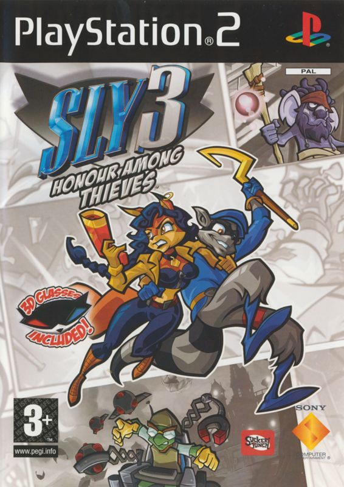
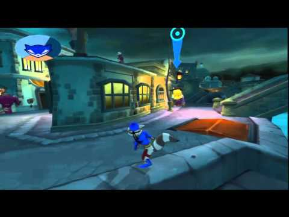

Sly 3: Honour Among Thieves is a semi open world, third person, roll playing game. You play as a member of the Cooper gang, where you defeat enemies and steal treasure while you take on missions planned by Bentley.

Missions range in type, from sneaking into or out of a place, to killing enemies, hacking computers, scaling buildings and flying planes or RC copters. Furthermore, it is possible to upgrade each of the three main characters by buying new items for them. This is done using money obtained by destroying enemies or objects, or by stealing gold and items from enemies pockets. Finally, you can disguise yourself in different ways to sneak around and into spesific places to evade combat.
Thoughout the game, you move from place to place, starting in Venice and ending in the Caribbeans. All places has their own environment, ranging in both style and layout, and enemies fitting to the different settings. There are also completelly different quests each place and different tasks to do, which are explaned in cutscenes by Bentley.